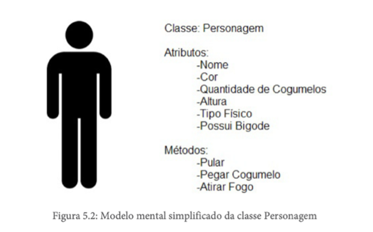

Aula 07 - Tipos de Atributos e Métodos
Vamos apresentar agora os dois tipos de atributos e métodos. Ambos podem ser de instância ou estático.
Atributo de Instância
Os atributos de instância, embora definidos na classe pertencem ao objeto. Ou seja, só poderão ser acessados/usados a partir de instâncias de uma classe (no caso, um objeto). Com isso, cada um pode ter valores distintos para seus atributos e assim conseguir armazenar os valores que necessitam.
Por exemplo, se em uma classe chamada Pessoa existir um atributo de instância chamado nome, poderemos criar dois objetos e cada um ter um valor em particular para esse atributo. No caso, poderíamos ter um objeto com o valor “Isadora” para seu atributo nome, e um outro objeto com o valor “Lorena” para seu atributo nome.
Caso uma coincidência ocorresse, esses dois objetos distintos até poderiam ter o mesmo valor para o nome, mesmo assim cada valor pertenceria isoladamente a cada objeto.
Por padrão, todo atributo é de instância e, para defini-los desta forma, basta criar os atributos como já vem sendo feito.
Atributo Estático
O atributo estático pertence à classe, e não ao objeto. Atributos deste tipo devem ser acessados/usados diretamente a partir da classe.
Devido ao comportamento de pertencer à classe e não ao objeto, ele se comporta de forma oposta ao de instância: valores armazenados neles são iguais em todos os objetos criados a partir da classe.
//Java
class Pessoa {
String nome;
static int quantidadeDeOlhos;
}
Um atributo declarado com a palavra-chave static pertence à classe, não ao objeto. Isso significa que todos os objetos criados compartilham exatamente o mesmo valor. Se um objeto alterar esse valor, todos os outros serão afetados.
Métodos
Assim como os atributos, os métodos de uma classe também podem ser divididos em dois tipos fundamentais. A diferença está em quem executa o método e o que ele pode acessar.
Método de instância
O método de instância é definido na classe, mas é acessado/usado via o objeto. Sua execução só poderá ser requisitada por meio de um objeto.
Por natureza, o método não armazena valores e sim executa uma ação.
//Java
class Pessoa {
String nome;
static int quantidadeDeOlhos;
String falar( ) {
return "Olá!";
}
}
Executado por um objeto específico. Pode acessar e modificar os atributos de instância daquele objeto. Requer que um objeto seja criado antes de ser chamado.
//C#
class Pessoa
{
string nome;
static int quantidadeDeOlhos;
String Falar ( )
{
return "Olá!";
}
}
Executado pelo Objeto
Um método de instância é chamado sobre um objeto existente. Ele tem acesso direto aos atributos de instância do objeto e pode alterar seu estado interno.
Para usá-lo, é necessário criar um objeto primeiro — sem instância, sem chamada.
class Pessoa {
String nome;
void falar() {
System.out.println(
"Olá, eu sou " + nome
);
}
}
Pessoa p = new Pessoa();
p.nome = "Ana";
p.falar();
// Saída: "Olá, eu sou Ana"
Método Estático
O método estático pertence à classe e deve ser acessado diretamente através dela.
//Java
class Pessoa {
String nome;
static int quantidadeDeOlhos;
String falar ( ) {
return "Olá!";
}
static void andar ( ) {
// implementação
}
}
Use membros estáticos com parcimônia.
Método Estático ou não: eis a questão?
A respeito de métodos, um questionamento é válido: por que usar um método de forma estática, já que, sendo deste tipo ou de instância, o comportamento em si será sempre o mesmo? A resposta é: devemos usar métodos estáticos apenas quando métodos não requerem a criação de objetos para sua execução. Eles são independentes e só foram definidos em uma classe porque, afinal de contas, a classe é a unidade de programação mínima no paradigma orientado a objeto.
Um exemplo clássico disto é a classe Math, presente tanto em Java como em C#. Ela é uma classe utilitária que possui vários métodos de vários cálculos matemáticos, por exemplo, seno, cosseno, valor absoluto, entre outros. Todos os métodos dessa classe são estáticos. Não seria necessário criar um objeto dela, para, por exemplo, somente saber o seno de um ângulo através do método sin. Basta requisitar de forma livre passando o ângulo desejado.
//Java
Math.sin(30);
//C#
Math.Sin(30);
Juntando Tudo
Após um árdua passagem pelos conceitos estruturais, um exemplo prático de como todos eles podem ser usados em conjunto pode facilitar o entendimento. Vamos aprofundar um pouco mais o exemplo do personagem do jogo de videogame.
Como a meta era modelar um personagem de um jogo inicialmente precisamos criar uma classe chamada Personagem. Um personagem genérico teria, pelo menos, um nome. Mas como os nossos personagens de sucesso possuem mais características, mais atributos precisarão ser adicionados. Então, forma criados os seguintes atributos: nome, cor, quantidadeDeCogumelos, altura, tipoFísico, possuiBigode. Cada um teve seu tipo de dados específico definido.
Além disso, foi verificado que eles poderiam realizar algumas ações, afinal, a meta é possibilitar o seu uso, jogar com um deles. Então, os seguintes métodos foram criados para representar algumas de suas ações possíveis: pular ( ), pegarCogumelo ( Cogumelo cogumelo), atirarFogo ( ).
Mais métodos poderiam ter sido criados, mas estes são suficientes para o entendimento do que é preciso. Além destes, também foram criados os métodos toString, equals, hashCode, os construtores e os destrutores. Estes são auxiliares e de grande utilidade.
O processo de identificação de classes/objetos com seus atributos e métodos inicialmente é trabalhoso. Para tentar facilitar esta atividade, criou-se um modelo mental simplificado deles no processo de modelagem. A figura a seguir ilustra esse modelo.

Embora seja inicialmente útil, como o passar do tempo, a complexidade de modelagem pode aumentar, e essa representação pode tornar-se inviável. Então, a seguinte representação facilitar a representação do conceito de um personagem: criar uma caixa com 3 seções, uma para o nome da classe, uma para os atributos e a última para os métodos. A figura a seguir ilustra essa nova representação.